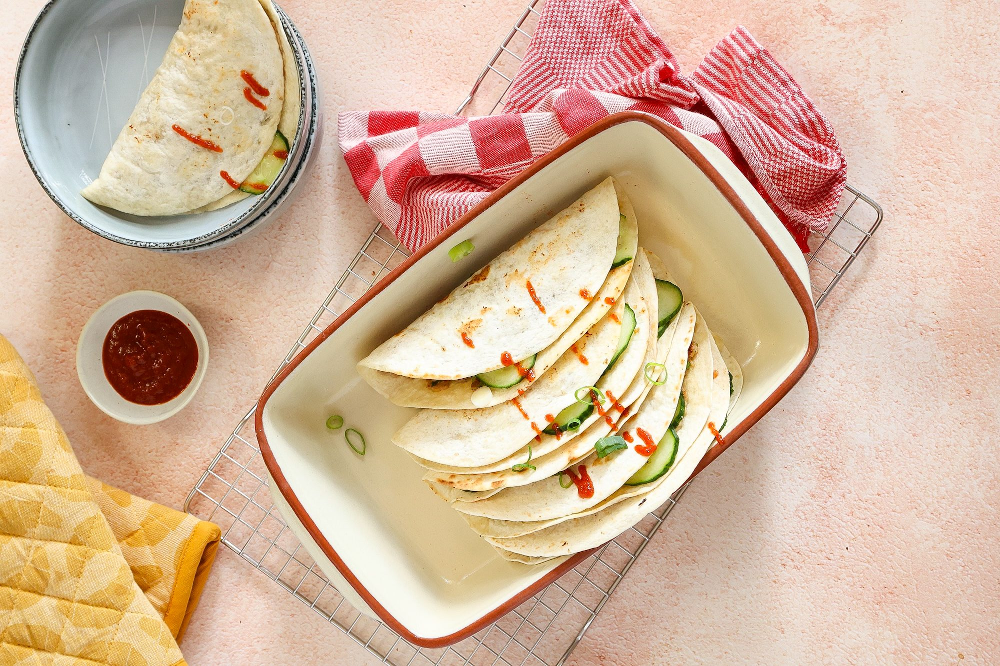

P
ingredienten
- 300 gr kipgehakt
- 6 kleine wraps
- 2 bosuien
- 2 tenen knoflook
- 1,5 el sojasaus (Go-Tan)
- snuifje zout
- 1/2 komkommer
Bereiding
-
Snijd de bosuien in ringen.
- Snijd/schaaf de komkommer in dunne plakjes. Meng de komkommer met de azijn en een snufje zout en peper.
- Doe het gehakt, uitgeperste tenen knoflook, de helft van de bosui, sojasaus, vissaus, koriander, snufje zout en peper in een kom. Meng door elkaar..
-
Verdeel het gehaktmengsel over 6 wraps en smeer uit zodat er een dunne laag gehakt op elke wrap zit. Druk aan met een lepel/vork.
- Giet een scheutje olie in een pan en leg een wrap in de pan (met de kant waar het gehakt op zit naar beneden).
- Bak de wrap totdat het gehakt gaar is en draai de wrap dan om. Schep de wrap uit de pan en leg op een bord. Ga zo door totdat je alle wraps hebt gebakken.